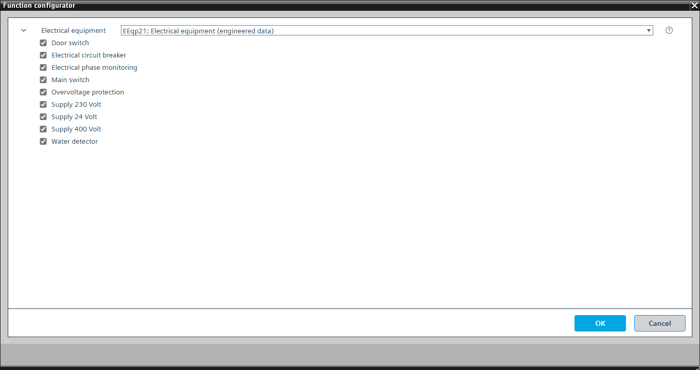

[EEqp21] Electrical equipment
Program block, name / node subtype: [EEqp21] Electrical equipment
Library hierarchy: Universal equipment
Family: EEqp
Project tree | Diagram |
|---|---|
|
|


Configurator


Program blocks are stored in the library without I/Os. Use the auto-create and auto-connect functions to create I/Os and/or to connect them to the interface blocks, e.g., R_A, CMD_B. Alternatively, take the I/Os from the folder containing the predefined I/Os in the library and/or from the plant and connect them to the interface blocks.
Function
Collects electrical data points.
Optional functions
This program block has the following optional functions:
Option: Electrical phase monitoring (1xBI)
Reads the signal from an electrical phase monitoring and generates an alarm.
Option: Electrical circuit breaker (1xBI)
Reads the signal from an electrical circuit breaker and generates an alarm.
Option: Overvoltage protection (1xBI)
Reads the signal from an overvoltage protection and generates an alarm.
Option: Main switch (1xBI)
Reads the signal from a main switch and generates an alarm.
Option: Supply 24 Volt (1xBI)
Reads the signal from a 24 Volt power supply unit and generates an alarm.
Option: Supply 230 Volt (1xBI)
Reads the signal from a 230 Volt power supply unit and generates an alarm.
Option: Supply 400 Volt (1xBI)
Reads the signal from a 400 Volt power supply unit and generates an alarm.
Option: Water detector (1xBI)
Reads the signal from a water detector and generates an alarm.
Option: Door switch (1xBI)
Reads the signal from the door switch of the electrical panel.
Optional elements
Name | Description | Type | Alarm / Notification class | Trend / Type | |
|---|---|---|---|---|---|
ElPhMon | Electrical phase monitoring | BI: Binary input | Yes, 5 | No | |
ElCrtBrk | Electrical circuit breaker | BI: Binary input | Yes, 5 | No | |
OvrVtgPrt | Overvoltage protection | BI: Binary input | Yes, 5 | No | |
MnSwi | Main switch | BI: Binary input | Yes, 5 | No | |
El24V | Supply 24 Volt | BI: Binary input | Yes, 5 | No | |
El230V | Supply 230 Volt | BI: Binary input | Yes, 5 | No | |
El400V | Supply 400 Volt | BI: Binary input | Yes, 5 | No | |
WDet | Water detector | BI: Binary input | Yes, 5 | No | |
DoorSwi | Door switch | BI: Binary input | No | Yes, 4 | |